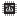
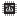

BlocklyProp reference Pulse in / out blocks
 For Propeller Activity Board WX, FLiP and Other board types. Not available for Badge or Scribbler Robot board types.
For Propeller Activity Board WX, FLiP and Other board types. Not available for Badge or Scribbler Robot board types.
pulse-in

The pulse-in block provides a value that represents a measurement of how long a pulse is in a low or high state in units of microseconds. The Propeller microcontroller begins measuring as soon as the PIN transitions into the state and stops and reports the measurement when it transitions out of the state.
pulse-out

The pulse-out block sends a pulse out on the PIN set by the dropdown menu. The value block sets the width of the pulse output in microseconds.
count pulses

The count pulses block provides the number of pulses detected over a certain perioid of time.
- Choose the Propeller I/O pin to monitor for pulses in the dropdown; options will vary by board type.
- Set how long to monitor that pin for pulses by putting a number value, variable, or expression that resolves to a number in the duration (ms) field.